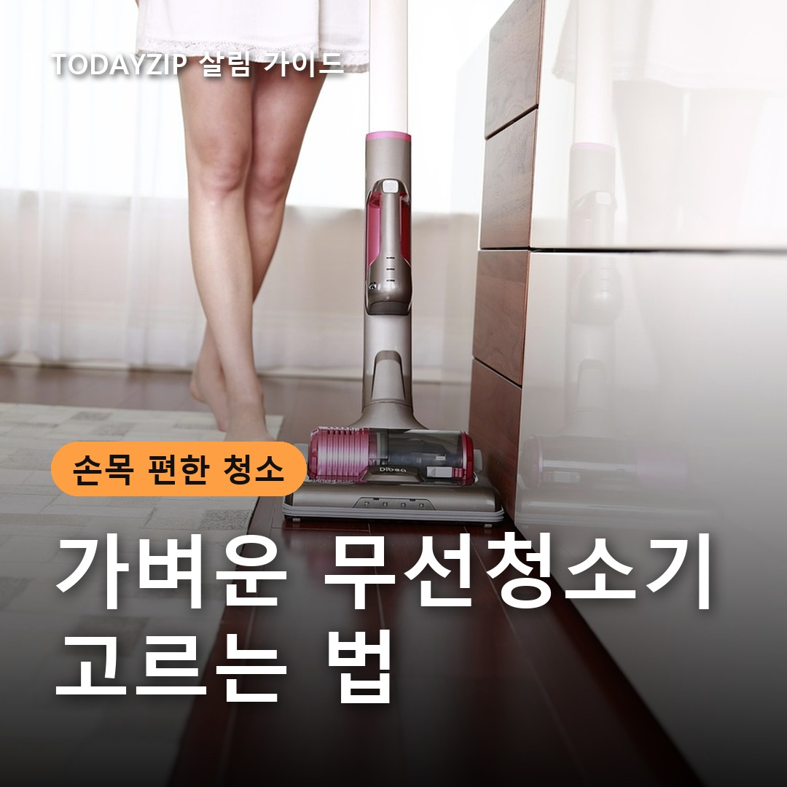
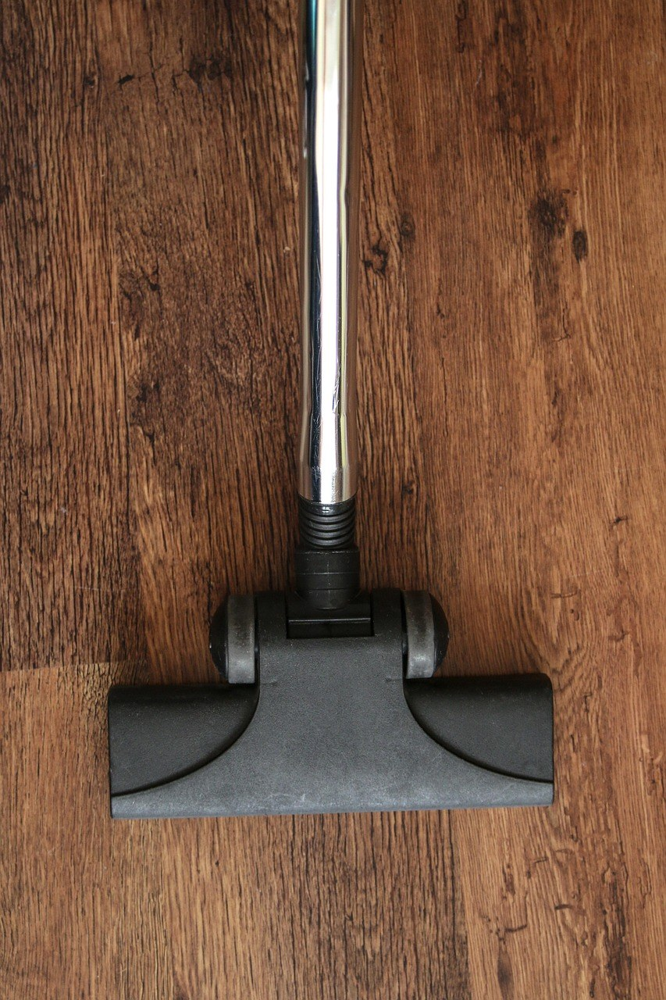
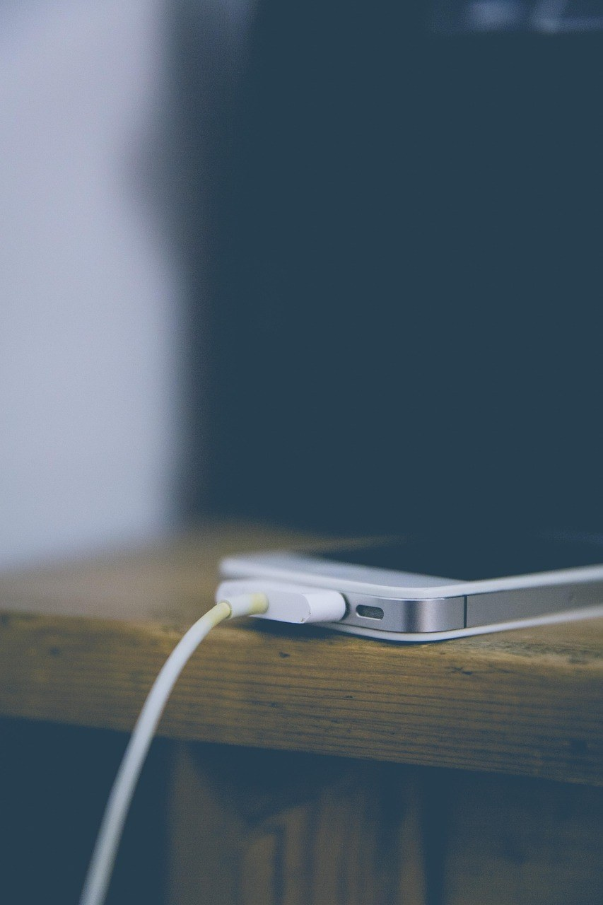
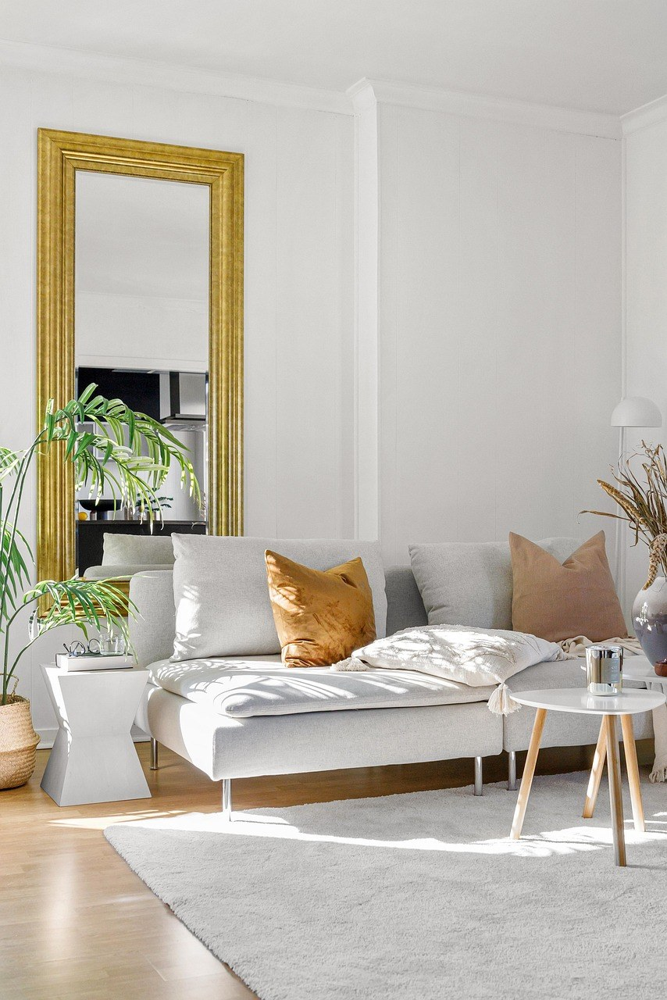

이 포스팅은 쿠팡 파트너스 활동의 일환으로, 이에 따른 일정액의 수수료를 제공받습니다.
[사진 1: 썸네일]
청소기를 꺼내는 게 귀찮아서 청소를 미룬 적 있나요? 그래서 요즘은 자주, 짧게 돌릴 수 있는 가벼운 무선청소기를 찾는 분이 많아요.
그런데 상세페이지를 보면 무게도 흡입력 단위도 제각각이라 비교가 어려워요. 오늘은 사기 전에 가장 많이 헷갈리는 질문을 하나씩 짚으면서 가벼운 무선청소기 고르는 기준을 정리해 드릴게요.
[사진 2]
📷 [직접 찍은 사진 넣기: 주방 저울에 1L 생수병을 올려 무게를 확인하는 모습(1kg 감 잡기)]
먼저 표기된 무게가 '본체만'인지 '헤드와 파이프까지 합친 무게'인지 보세요. 본체 무게만 크게 적어 두는 경우가 있어서, 실제로 들고 미는 무게는 전체 무게 쪽이 더 가까워요.
무게 중심도 중요해요. 모터와 배터리가 손잡이 쪽에 몰려 있으면 같은 무게라도 소파 밑을 닦을 때 손목에 더 부담이 가요.
✍️ [내 경험 한두 줄: 우리 집에서 청소기는 주로 누가, 일주일에 몇 번쯤 돌리나요?]
무선청소기 흡입력은 제조사마다 쓰는 단위가 달라요. 단위가 다르면 측정 방식도 달라서 숫자끼리 바로 비교하면 안 돼요.
[사진 3]
📷 [직접 찍은 사진 넣기: 청소기를 세워 둘 만한 콘센트 옆 빈자리]
상세페이지의 사용 시간은 보통 가장 약한 모드 기준이에요. 강한 모드로 쓰면 그보다 훨씬 짧아지니, 모드별 사용 시간이 따로 적혀 있는지 확인하세요.
원룸이나 작은 집에서 짧게 자주 돌린다면 약한 모드 기준 시간이 넉넉한지가 중요해요. 집이 넓다면 배터리를 빼서 바꿔 끼우는 분리형인지, 충전 시간은 얼마인지도 같이 보세요.
✍️ [내 경험 한두 줄: 우리 집 바닥은 대부분 마루인가요, 러그·카펫이 깔린 곳도 있나요?]
가벼운 무선청소기는 대신 먼지통과 배터리가 작은 경우가 많아요. 아래는 일반적인 경향이라 제품마다 다를 수 있어요.
| 구분 | 가벼운 스틱형 | 일반 스틱형 | 핸디형 |
|---|---|---|---|
| 들기 편함 | 좋음 | 보통 | 아주 좋음 |
| 먼지통 | 작은 편, 자주 비움 | 큰 편 | 작음 |
| 배터리 | 짧은 편 | 긴 편 | 짧음 |
| 잘 맞는 곳 | 원룸, 매일 짧은 청소 | 넓은 집 메인 청소 | 차, 책상, 소파 틈 |
[사진 4]
원룸이나 작은 집에서 메인으로 쓴다면 가벼운 스틱형에 흡입력 수치가 공개된 제품을 고르세요. 유선 청소기나 로봇청소기가 이미 있다면 서브용으로 더 가벼운 제품을 골라도 충분해요.
러그가 있거나 반려동물 털이 많다면 무게보다 흡입력과 헤드 브러시를 먼저 보세요. 털이 감기지 않는 구조인지도 확인하세요.
Q. 가벼운 무선청소기도 메인으로 쓸 수 있나요?
A. 작은 집이라면 충분해요. 다만 먼지통을 자주 비워야 하니 비우기 쉬운지 보세요.
Q. 필터는 물로 씻어도 되나요?
A. 제품마다 달라요. 물세척 가능 표시가 있는 필터만 씻고, 완전히 말린 뒤 끼워야 냄새와 고장을 막을 수 있어요.
Q. Pa 숫자가 크면 더 센 건가요?
A. Pa는 압력만 보여 주는 값이라 숫자가 커도 실제로 빨아들이는 힘을 다 알 수는 없어요. 같은 단위끼리 비교하세요.
정리하면, 원룸 메인용은 전체 무게와 흡입력 단위를 함께 보고, 넓은 집은 배터리 분리형, 서브용은 핸디형까지 넓혀 보세요. 가벼운 무선청소기는 '자주 꺼내게 되는지'가 가장 큰 기준이에요.
여러분은 청소기를 고를 때 무게와 흡입력 중 무엇을 더 보시나요? 댓글로 기준을 나눠 주세요.
인스타그램 @todayzip.info 에서 살림 꿀팁을 30초 영상으로도 볼 수 있어요.
이 포스팅은 쿠팡 파트너스 활동의 일환으로, 이에 따른 일정액의 수수료를 제공받습니다.